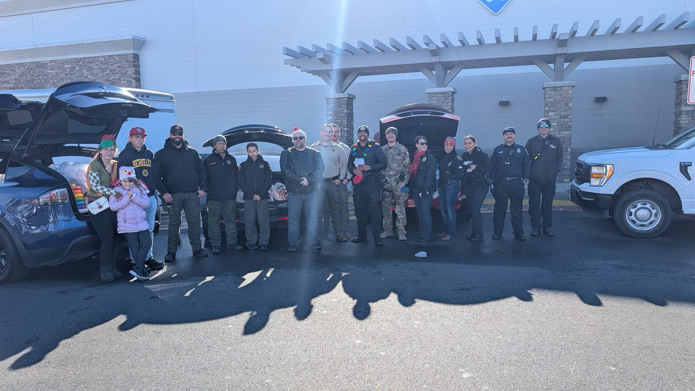
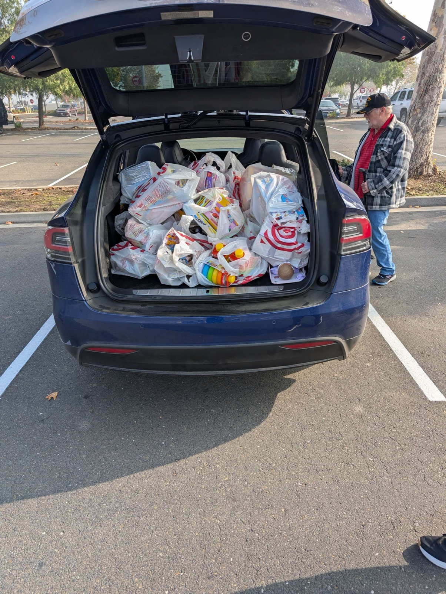
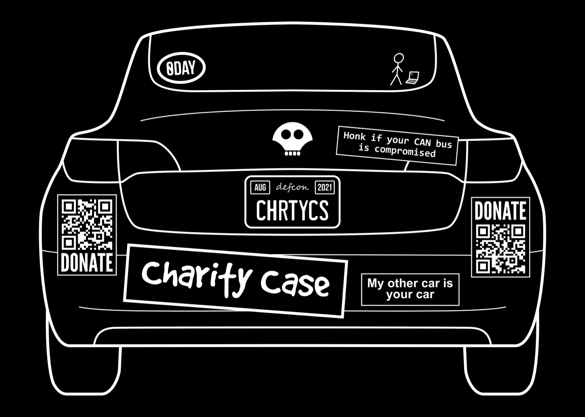
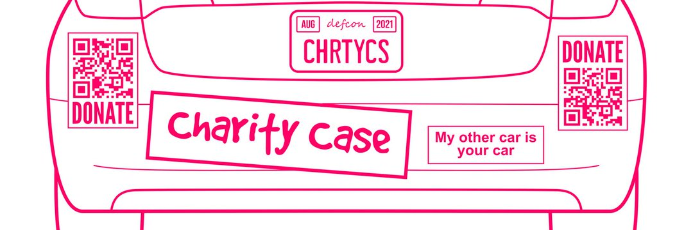

The archive
Stories, updates & experiments
Ten original posts from CharityCase.net, from toy drives and DEF CON to AI education and family-built games.

NO STEP ON SNEK REMIX
A dad’s remix of a family AI experiment—retro game design, reimagined in one evening.

Charity Case GAME! NO STEP ON SNEK!!!!
A family’s AI-powered retro-game adventure, created by kids with no coding experience.

2025 the year for a 501c3
A shift from the Kia/JB4 community toward AI education and nonprofit work.
TOY DRIVE ONGOING! RAFFLES! END 16TH!
The 2024 toy-drive raffles, donation options, and sponsor thanks.

First toy drive pickup! Over $800 in toys.
A photo update from the first major pickup of the 2024 toy drive.

Toy Drive Kick Off
The first $25 donation officially kicked off the 2024 toy drive.

Update!
DEF CON, the solar shed, the upcoming toy drive, and the next family projects.
DEF CON 2024
Team Charity Case prepared to compete at DEF CON 2024.

Expanding our work
An easy-to-understand security assistant for homes and families.
Gearing Up for the 2024 Toy Drive at CharityCase.net
The story behind the toy drive, from a first bicycle in 1986 to a community-wide effort.
No matching stories found.